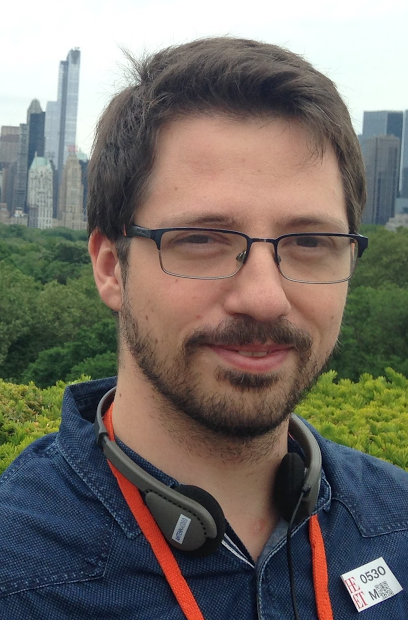

Albert Gordo
Research Scientist
Xerox Research Centre Europe
albert.gordo@xrce.xerox.com
I am a research scientist at Xerox Research Centre Europe (XRCE) in the Computer Vision group. My research is focused on machine learning and computer vision, currently with a special interest in learning representations for large-scale image retrieval, document image understanding, and text recognition and understanding in the wild.
About me
I received my Ph.D. from the Computer Vision Center in the Universitat Autonoma de Barcelona, Spain, in collaboration with the Computer Vision group at XRCE, supervised by Ernest Valveny and Florent Perronnin. After that I was a postdoc at the LEAR group in INRIA Grenoble, working on large-scale object detection with Cordelia Schmid. Since 2014 I am a research scientist in the Computer Vision group at XRCE.
News
- Invited talks about our recent papers on image retrieval:
- Cornell University AI seminar, February 2017
- Cornell Tech, NY, February 2017
- One paper accepted at CVPR 2017! Beyond instance-level image retrieval: Leveraging captions to learn a global visual representation for semantic retrieval
- Invited talks about our recent paper Deep Image Retrieval: Learning global representations for image search:
- THOTH group, INRIA, September 2016
- GTC Europe, September 2016
- One paper accepted at ECCV 2016! Deep Image Retrieval: Learning global representations for image search
- One paper accepted at ICCV 2015! LEWIS: Latent Embeddings for Word Images and their Semantics
- Outstanding reviewer award at CVPR 2015!
- Invited talk at the Computer Vision Center in Barcelona, Spain. Deep fishing: Extracting Gradient Features from Deep Nets / LEWIS: Latent embeddings for word images and their semantics. Video available here
- One paper accepted at CVPR 2015! Supervised Mid-Level Features for Word Image Representation
- Invited talk at INRIA's µ-Workshop on Computer Vision: Towards Text Understanding: Word Image Representation, Matching and Recognition. Slides and video available
- Winning team (with some colleagues from the Computer Vision Center in Barcelona) of the Handwritten Keyword Spotting Competition, track I, held at ICFHR 2014
Theme adapted from orderedlist/minimal.